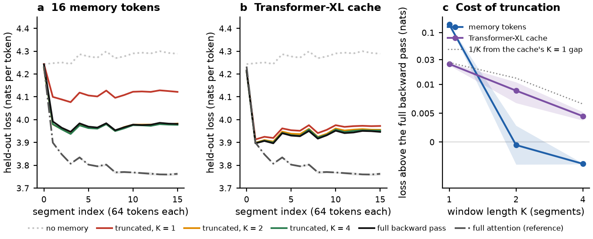
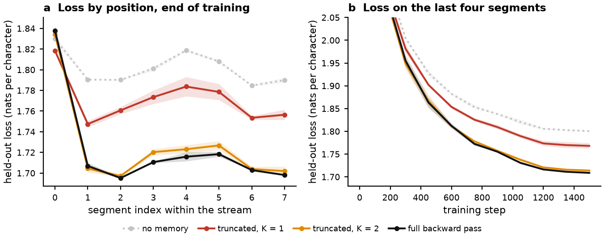
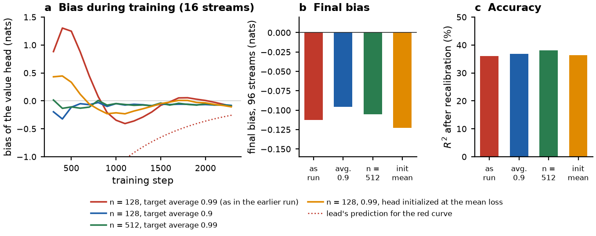

Can a scalar value net carry credit across a truncated backward pass?
An overnight program on value nets for language-model pretraining: predicting future loss at nanoGPT scale, and using a value net trained by temporal differences as the boundary condition of truncated backpropagation through time.一个关于语言模型预训练中价值网络的通宵研究项目：在 nanoGPT 规模上预测未来损失，并把用时序差分（TD）训练的价值网络用作沿时间的截断反向传播（truncated BPTT）的边界条件。
Bottom line结论
Where things stand at midnight PST. One of the eight GPU workers got a node, so the natural-text results at GPT scale come from one worker and the mechanism tests from small CPU experiments. Seeds and scale are stated with each finding; nothing below has more than three seeds.
What the experiments show so far. On FineWeb with a 6-layer GPT, truncating the backward pass to one segment costs 0.143 nats when the carried state is a set of memory tokens (two seeds), and nothing measurable at two segments; with a Transformer-XL cache the cost is 0.026 nats and falls like $1/K$. On a character-level model trained with one-segment windows, a critic that sees the next segment (hindsight) closes about half of the gap, a critic that sees the window a third to a half, and a critic that sees only the carried state ends below truncation. On delayed recall with one-block windows (three seeds), a critic that sees the window recovers the full backward pass with exact targets (99%), two of three delays with temporal-difference targets, one delay without the bootstrap; state-only critics reach 21 to 43% and truncation stays at chance.
What the theory says, and the experiments above were designed to test. (1) The boundary signal is the derivative of future loss with the future tokens held fixed; the gradient of a fitted value adds a term that tracks which documents a state belongs to. (2) For a calibrated reader the expected gradient given the carried state is zero (a score identity), so a critic must see what the window contained; this applies to the adjoint net of the original note as well. (3) Temporal-difference targets carry the credit for storing something only as far as the critic can see: $MK+H$ segments for a cache of $M$ windows and a lookahead of $H$ segments. (4) Under teacher forcing the future tokens are known and unaffected by the model, so a critic may take them as input; a scalar value of state and future tokens then obeys an exact Bellman equation, and on a trained character-level model this hindsight input raises the explained share of the boundary adjoint from 0.6% to 10 to 13%.
Not yet known. Whether a learned signal recovers the 0.14 nats at $K=1$ on FineWeb (running now); the scalar forms under controlled conditions (a first run of the plain value gradient was unstable and is not interpretable); value-net pretraining at nanoGPT scale (one side experiment running).
Findings发现
1On natural text the cost of truncation depends on what is carried: with dedicated memory tokens it is 0.14 nats at a window of one segment and gone at two; with a Transformer-XL cache it is 0.026 nats and falls like $1/K$
Setting. A 6-layer GPT (width 384) reads FineWeb documents in 16 segments of 64 tokens and carries a state from one segment to the next: either 16 memory tokens (the outputs at write slots appended to a segment become the prefix of the next), or a Transformer-XL cache (the previous segment's hidden states at every layer). Truncated, K trains with one backward pass per $K$ segments and detaches the state at window starts; the full backward pass differentiates through all 16 segments. All arms see the same 786M tokens and take the same 6,000 steps. No memory resets the state at every segment; full attention is an ordinary transformer over all 1,024 tokens.
Held-out loss on the last 8 segments, two seeds per arm. Memory tokens: no memory 4.288, $K=1$ 4.118, $K=2$ 3.975, $K=4$ 3.971, full 3.975. Truncation at $K=1$ costs 0.143 nats on both seeds; at $K=2$ the difference from the full backward pass is $+0.003$ and $-0.004$, and at $K=4$ $-0.004$ on both, so zero within the seed spread. In float64 the gradient of the write slots at $K=1$ is exactly zero; the memory then works as an untrained reservoir, and resetting it at evaluation still costs that model 0.25 nats, against 0.40 for the fully trained memory. Transformer-XL cache: the cost is 0.026 and 0.023 at $K=1$, 0.011 and 0.007 at $K=2$, 0.005 and 0.004 at $K=4$, close to $1/K$ (c). Full attention over all 1,024 tokens reaches 3.765. The lead had predicted a $1/K$ decay for memory tokens and under 0.01 for the cache; both predictions failed. A reading that fits both: the triangular lag kernel halves the weight of one-segment credit at $K=2$; memory tokens serve only the next segment, so any positive weight leads to the same optimum, while cached hidden states also serve the local loss, and under-weighted cross-segment credit shifts the trade-off in proportion. This reading predicts that scaling the hand-off gradient by $K/(K-1)$ closes the cache's gap at no cost; that run is queued.


Consequence for the program: with memory tokens a learned boundary signal can gain at most the step from $K=1$ to $K=2$ on natural text at this scale, and only credit over one segment is needed for it. Credit over many segments matters where it is forced (recall tasks, needle text).
2A boundary signal that sees only the carried state carries no credit for storing new information once the reader is calibrated一旦读取端已校准，只看携带状态的边界信号不携带任何存储新信息的信用
Terms. The boundary signal $g$ replaces the gradient that truncated backpropagation drops at the cut. $B=\mathrm{d}s_{\text{end}}/\mathrm{d}\theta$ is how the parameters move the state at the cut through the window, and $\lambda$ is the exact gradient of the future loss with respect to that state. The true missing term is $\mathbb{E}[B^\top\lambda]$. A model is calibrated given its inputs when its predicted next-token distribution equals the true distribution given the carried state and the tokens of the current segment, which is what training on cross-entropy drives the reader toward.术语。边界信号 $g$ 用来替代截断反向传播在截断点丢掉的梯度。$B=\mathrm{d}s_{\text{end}}/\mathrm{d}\theta$ 描述参数如何通过窗口改变截断点处的状态，$\lambda$ 是未来损失对该状态的精确梯度。真正缺失的项是 $\mathbb{E}[B^\top\lambda]$。如果模型预测的下一个 token 的分布等于给定携带状态和当前段 token 时的真实分布，就称模型在给定其输入时是校准的；用交叉熵训练会把读取端推向这一状态。
For cross-entropy and any information set $\mathcal{G}$ that contains the state, $$\mathbb{E}[\nabla_{s}\ell\mid\mathcal{G}]=\nabla_s\,\mathbb{E}\big[\mathrm{KL}\big(P(\cdot\mid\mathcal{G})\,\|\,p_\theta(\cdot\mid s)\big)\mid\mathcal{G}\big].$$ With $\mathcal{G}$ the state alone and a calibrated reader the divergence is at its minimum, so the expected read gradient given the state is zero. Three regimes follow. If the state is a sufficient summary of its history, truncation is already unbiased and there is nothing to restore. If the state is lossy and later states keep what it holds, the ideal state-only signal is exactly zero and the missing term is all covariance, $\mathbb{E}[B^\top\lambda]=\mathbb{E}[\mathrm{Cov}(B,\lambda\mid s)]$: the write Jacobian and the future's demand are linked through window content that the state does not hold, and a function of the state cannot see that link. If later states also lose information, a state-only signal restores the credit for retaining what is already stored, and nothing for storing more. In an enumerated example the expected gradient given the state is $2\times10^{-13}$ while the true write gradient has norm 0.13, and a critic that sees the window reproduces it to $10^{-10}$. This matches an earlier probe result on this question: the energy of the future gradient was predictable from the hidden state ($R^2\approx0.46$) and its signed direction was not ($R^2\approx0.015$). In a closed-form linear-quadratic recall toy (figure), a critic that sees the end state leaves 57 to 83% of the bias when the state is lossy; adding the window's tokens as an input brings it to 1% in the hardest case; and when training starts from a weak, lossy memory every state-only signal, including the exact expected adjoint, ends at the no-memory loss of 6.50 while the full backward pass reaches 0.50.对交叉熵损失和任何包含状态的信息集 $\mathcal{G}$，有 $$\mathbb{E}[\nabla_{s}\ell\mid\mathcal{G}]=\nabla_s\,\mathbb{E}\big[\mathrm{KL}\big(P(\cdot\mid\mathcal{G})\,\|\,p_\theta(\cdot\mid s)\big)\mid\mathcal{G}\big].$$ 当 $\mathcal{G}$ 只含状态且读取端已校准时，该散度取最小值，因此给定状态时读取梯度的期望为零。由此分出三种情形。若状态是其历史的充分概括，截断已经是无偏的，没有需要恢复的东西。若状态有损，而后续状态保留了它所含的内容，则理想的只看状态的信号恰好为零，缺失项全部是协方差，$\mathbb{E}[B^\top\lambda]=\mathbb{E}[\mathrm{Cov}(B,\lambda\mid s)]$：写入 Jacobian 与未来的需求通过状态未保存的窗口内容联系在一起，而状态的函数看不到这一联系。若后续状态也会丢失信息，只看状态的信号能恢复保持已存内容的信用，但恢复不了存入更多内容的信用。在一个枚举算例中，给定状态时的期望梯度为 $2\times10^{-13}$，而真实写入梯度的范数为 0.13，看到窗口的 critic 能将其复现到 $10^{-10}$ 的精度。这与此前关于该问题的一个探针结果一致：未来梯度的能量可以由隐藏状态预测（$R^2\approx0.46$），其带符号的方向则不能（$R^2\approx0.015$）。在一个闭式的线性二次回忆玩具模型中（见图），当状态有损时，看到末端状态的 critic 留下 57% 到 83% 的偏差；把窗口的 token 也作为输入后，在最难的情形下偏差降到 1%；当训练从一个弱而有损的记忆出发时，所有只看状态的信号（包括精确的期望伴随）最终都停在无记忆时的损失 6.50，而完整反向传播达到 0.50。

Oracle critics in a toy: the figure says which conditioning makes the target well defined. Whether a network learns it, and how far a real language model is from calibration, are the experiments now assigned (state-only against window-conditioned critics on every testbed).这是玩具模型中的 oracle critic：图中说明的是 critic 以哪些量为条件时目标是良定义的。网络能否学到它，以及真实语言模型离校准有多远，是现已分派的实验所要回答的问题（在每个测试平台上比较只看状态的 critic 与以窗口为条件的 critic）。
3On delayed recall with one-block windows, a critic that sees the window recovers the full backward pass with exact targets, two delays with temporal-difference targets and one delay without the bootstrap; state-only critics recover little
Setting. A tanh recurrent net (48 units) reads one item per block and must output the item shown 1, 2 or 3 blocks earlier (the delay is drawn per document). The item enters the state through a learned gate that starts near zero, and Gaussian noise is added to the state at every block, so that at the start the state does not hold the item: the net has to learn to store, then to retain. Training uses windows of one block ($K=1$), where truncation gives the write path no gradient. Arms: the full backward pass; the exact boundary adjoint from a chunked sweep; an adjoint net that sees the state and the window, trained on exact (Monte Carlo) targets, on temporal-difference targets, or on the next block's own gradient with the bootstrap term removed; the same nets seeing the state only; a constant per position; truncation. Chance is 12.5%.
Recall accuracy after 3,000 steps, three seeds, mean of the last two evaluations. Full backward pass 99.9 to 100%; exact adjoint 100%; window critic with exact targets 98.6 to 99.8%; with temporal-difference targets 65 to 84%; without the bootstrap 58 to 60%; state-only critics 21 to 43%; constant per position 13%; truncation 15%. Panel b shows what each target reaches. Without the bootstrap the critic credits storage for the next block only: 100% at delay 1 and 29 to 40% at delays 2 and 3. The bootstrap adds the credit for retaining what is already stored: delay 2 rises to 98 to 99% on two seeds and 52% on the third, and delay 3 stays at 30 to 40%. Exact targets reach every delay (98 to 100%). This is the order the theory gives: storage credit up to the target's own horizon, retention credit through the bootstrap, everything with Monte Carlo targets. The state-only critics inject small signals (under 10% of the norm of the exact adjoint, cap never binding) and end far below the window critics on every seed.


One small architecture and one task family on a CPU. The value gradient of a scalar net and the Sobolev forms have not yet been rerun under the same controls; they are queued. On a single fixed delay of 3 blocks from a cold start all learned critics were slow in the earlier runs (13 to 47% after 3,000 steps against 100% for the exact adjoint).
4On a character-level model with memory tokens, the boundary adjoint is unpredictable from the state and becomes predictable once the critic sees the next segment; in training at $K=1$ learned critics that see the window or the next segment close about half of the truncation gap, and a state-only critic ends below truncation
Setting. The character-level model of the truncation finding (4 memory tokens, 8 segments of 16 characters). Frozen diagnostic: on a trained model, compute the exact boundary adjoint $\lambda$ at every boundary, fit small critics to it by regression, and measure on held-out streams the share of $\lambda$ explained per boundary and the cosine between the parameter gradients that the critic and the exact adjoint produce, summed over 256 streams. The critic sees the state; or also the hidden states of the window; or also the characters of the next 1, 2 or 4 segments (hindsight). Shuffled control: the critic's output for another stream. Split-half ceiling: the same cosine between two disjoint batches of exact gradients. Loop: train from scratch at $K=1$ with a critic's output as the boundary signal.
On the model trained with the full backward pass, the critics explain 0.5% of $\lambda$ from the state, 0.6% with the window and 10 to 13% with hindsight (a). At the level of 256-stream batches the hindsight critics reach the split-half ceiling of 0.33, and the state and window critics stay near the shuffled control (b, black). On the model trained with $K=1$, whose write path was never trained, the missing gradient has a large common direction, and every critic captures most of it (0.74 to 0.80; b, red). In the loop at $K=1$ (c; truncation gap 0.059 nats): the exact adjoint closes 100% and 100% of the gap on the two seeds, $K=2$ truncation 89 and 94%, a hindsight critic that sees the next segment and predicts the gradient of that segment's loss (no bootstrap) 51 and 48%, the window critic with temporal-difference targets 28 and 52%; the state-only critic ends 26 and 49% below truncation and a constant signal per position 11 and 32% below. The failing signals are small, 1 to 5% of the norm of the exact adjoint, and a cap on the signal norm never binds, so here the harm comes from their direction. The learned signals recover about half of the gap, where doubling the window recovers about 90% at the same compute and twice the activation memory.

Small critics (two hidden layers) on a small model. The GPU worker runs the same comparison on FineWeb with transformer critics after midnight; arms with temporal-difference targets and hindsight, and the scalar forms, are still running here.
5During GPT pretraining a temporal-difference value head predicts the discounted future loss with $R^2$ 0.36 to 0.38, and its bias of about $-0.1$ nats is a steady offset that faster bootstrapping does not remove
Setting, from an earlier run on this question and its code. A value head on a GPT with 8 layers reads hidden states during pretraining (300M FineWeb tokens, windows of 2,048 tokens) and predicts the discounted mean of the model's own future loss, $(1-\gamma)\sum_i\gamma^i L_{t+i}$ with $\gamma=1-1/1024$, a target that reaches past the end of the window. It is trained by $n$-step temporal differences: the realized losses of the next $n$ tokens plus $\gamma^n$ times the prediction of a slowly averaged copy of the head. The earlier run found this head biased low by 0.11 to 0.15 nats and could not say why. The lead's hypothesis was un-converged bootstrapping: the bootstrapped part climbs toward the mean loss with time constant $\tau_{\text{avg}}/(1-\gamma^n)\approx850$ steps in a run of 2,290 steps, which a faster target average, a longer $n$, or a head initialized at the mean loss would cure.
Four variants, one per GPU. The final bias on 96 held-out streams is $-0.113$ as run, $-0.096$ with the faster target average, $-0.105$ with $n=512$ and $-0.123$ with the head initialized at the mean loss (b). The faster variants settle by step 600 and stay at the same offset; the as-run variant oscillates around it (a). The hypothesis is refuted: the bias is a steady offset of about $-0.1$ nats in every variant, nearly uniform over the position in the window ($-0.07$ to $-0.10$ in the first quarter, $-0.11$ to $-0.14$ in the last). An earlier audit attributed 0.04 to 0.08 of it to the benchmark streams being harder than the training data; the rest is unexplained. After a linear recalibration the head explains 36 to 38% of the variance of the target, 26 to 35% within a window position, and $n=512$ is the best variant on both (c).

One seed per variant and one model size. The comparison with a Monte Carlo head at horizons beyond the window, and the measurement on held-out rows of the training distribution that would isolate the benchmark shift, are queued behind the boundary-signal experiments.
6With temporal-difference targets a critic credits stored content up to a lag of $MK+H$ segments; with Monte Carlo targets, at every lag用 TD 目标时，critic 对已存内容的信用分配最远到滞后 $MK+H$ 段；用 Monte Carlo 目标时，在所有滞后上都能分配
Terms. Monte Carlo targets are exact boundary adjoints from a chunked backward sweep over the rest of the document. Temporal-difference targets are the adjoint of the next window's own losses plus the critic's prediction at the next boundary, the bootstrap. $K$ is the window length, $M$ the number of past windows whose hidden states the critic sees as a detached cache, $H$ the number of future segments whose tokens it sees. Storage credit is the part of the gradient that rewards writing something into the state for a later use.术语。Monte Carlo 目标是对文档剩余部分做分块反向扫描得到的精确边界伴随量。TD 目标是下一个窗口自身损失的伴随量，加上 critic 在下一个边界处的预测，即自举项。$K$ 是窗口长度；$M$ 是过去窗口的个数，critic 把这些窗口的隐藏状态作为分离梯度的（detached）缓存来看；$H$ 是未来段的个数，critic 能看到这些段的 token。存储信用是梯度中奖励为日后使用而把内容写入状态的那一部分。
At each bootstrap step the next critic knows the current window only through the state that was written. Whatever the window contained and the state did not keep is invisible to it, so the credit for storing that content is dropped at that step. The exact rule: the loss at segment $r$ credits the write correctly iff $r\le b+MK+H-1$, with $b$ the boundary. In the figure ($K=1$, exact enumeration of a small recall problem with a lossy state and a calibrated reader) a use at lag 2 is credited with temporal-difference targets by a two-window cache or one segment of lookahead and gets nothing from the plain window critic; lag 3 needs two segments of lookahead. With Monte Carlo targets every critic that sees the window is exact. The state-only critic has 100% error throughout. Under a calibrated reader the bootstrap term of a window critic contributes retention credit only.在每个自举步，下一个 critic 只能通过已写入的状态了解当前窗口。窗口中包含而状态没有保留的内容对它不可见，因此存储这部分内容所应得的信用在这一步被丢掉。精确的规则是：段 $r$ 处的损失能正确地给写入分配信用，当且仅当 $r\le b+MK+H-1$，其中 $b$ 为边界。在图中（$K=1$，对一个状态有损、读取端已校准的小型回忆问题做精确枚举），用 TD 目标时，滞后为 2 的使用可以由两个窗口的缓存或一段前瞻获得信用，而从普通的窗口 critic 那里得不到任何信用；滞后 3 需要两段前瞻。用 Monte Carlo 目标时，每个看到窗口的 critic 都是精确的。只看状态的 critic 的误差始终为 100%。在读取端已校准的情况下，窗口 critic 的自举项只贡献保持信用。

Fixed points of the regressions, in a problem small enough to enumerate. Whether a network reaches them while the model changes is what the closed-loop experiments measure.这些结论针对的是回归的不动点，并且是在一个小到可以枚举的问题中得到的。网络在模型不断变化时能否达到这些不动点，是闭环实验要测量的内容。
7The gradient of a correctly fitted scalar value differs from the boundary signal by a confounding term正确拟合的标量价值的梯度与边界信号相差一个混杂项
Terms. The carried state $s_j$ is what the model passes from block $j-1$ to block $j$ (memory tokens, a cache, fast weights). The pathwise adjoint $\lambda_j=\nabla_s G_j(s_j,f)$ is the derivative of the remaining loss $G_j$ with respect to that state for the document's actual future tokens $f$; it is what full backpropagation would deliver at the cut. The expected adjoint $a(s)=\mathbb{E}[\lambda\mid s]$ is the best any learned boundary signal can do. The value $V(s)=\mathbb{E}[G\mid s]$ is what temporal-difference or Monte Carlo regression converges to.术语。携带状态 $s_j$ 是模型从块 $j-1$ 传给块 $j$ 的内容（记忆 token、缓存、快权重）。逐路径伴随量 $\lambda_j=\nabla_s G_j(s_j,f)$ 是在文档实际的未来 token $f$ 下，剩余损失 $G_j$ 对该状态的导数；它就是完整反向传播在截断点会给出的量。期望伴随 $a(s)=\mathbb{E}[\lambda\mid s]$ 是任何学习得到的边界信号所能达到的最好结果。价值 $V(s)=\mathbb{E}[G\mid s]$ 是 TD 回归或 Monte Carlo 回归收敛到的对象。
For a state with a smooth density, $$\nabla_s V(s)=a(s)+\mathrm{Cov}\big(G,\ \nabla_s\log p(f\mid s)\ \big|\ s\big).$$ In reinforcement learning the future is a consequence of the state, and the derivative of a correct value is the derivative that credit assignment needs. Under teacher forcing the future tokens come from the document, and the state summarizes the same document, so differentiating the value also differentiates over which documents a state stands for; the covariance term is that part. Earlier runs on this question found 80 to 90% of the variance of future loss between documents. The figure is a closed-form example: a two-coordinate state whose first coordinate is memory that lowers the loss, with a difficulty signal of strength $\|w\|$ that is either carried by the second, causally inert coordinate (a) or mixed into both (b). With value regression alone the fit is exact and the cosine to the expected adjoint falls with the confounding strength, and in case b it turns negative: following that gradient increases the true loss. A derivative target of weight $\beta$ shrinks the surviving confounding to a fraction $1/(1+\beta)$ at a cost in value fit (c). A second, detached input removes the trade-off.对具有光滑密度的状态，$$\nabla_s V(s)=a(s)+\mathrm{Cov}\big(G,\ \nabla_s\log p(f\mid s)\ \big|\ s\big).$$ 当未来不依赖于状态时协方差项为零，例如在由状态因果地决定未来的控制问题中。在 teacher forcing 下，未来 token 来自文档，而状态概括的是同一篇文档，因此该项度量的是文档难度在不同状态之间如何变化。此前关于该问题的运行发现，未来损失的方差有 80% 到 90% 来自文档之间。图中是一个闭式算例：状态有两个坐标，第一个坐标是能降低损失的记忆；另有一个强度为 $\|w\|$ 的难度信号，它或者由第二个、因果上不起作用的坐标携带（a），或者混入两个坐标（b）。只用价值回归时，拟合是精确的，与期望伴随的余弦随混杂强度增大而下降，在情形 b 中变为负值：沿该梯度更新会使真实损失增大。权重为 $\beta$ 的导数目标把残留的混杂缩小到原来的 $1/(1+\beta)$，代价是价值拟合变差（c）。增加一个分离梯度的（detached）第二输入可以消除这一权衡。

This is a statement about the fixed point of value regression. Whether the term is large in a trained language model with a carried state is an experiment (workers 3, 5 and 6).这是关于价值回归不动点的结论。在带携带状态的已训练语言模型中该项是否很大，是一个实验问题（worker 3、5 和 6）。
8In a toy with a known answer, value regression fits the value and misses the gradient; derivative or paired-difference targets recover it在答案已知的玩具模型中，价值回归能拟合价值，但得不到梯度；导数目标或成对差分目标能恢复梯度
The toy state has a memory part, a noisy copy of content that the future asks for (write quality $q$ is the correlation between memory and content), and an inert part that encodes the document's difficulty with weight $\gamma$ in the cost. The expected adjoint is known by Monte Carlo. Six critics are fit by ridge regression on random Fourier features: value regression only; Sobolev with value and derivative terms; Sobolev with the derivative term only; a detached second input, which here is the same as an adjoint net plus a value head; paired perturbation, which regresses value differences between a state and a noisy copy under the same future; and a reset baseline, which regresses the loss difference to a rollout from the empty state.玩具模型的状态包含一个记忆部分，即未来会查询的内容的带噪副本（写入质量 $q$ 是记忆与内容之间的相关系数），以及一个惰性部分，它编码文档的难度，难度在代价中的权重为 $\gamma$。期望伴随可由 Monte Carlo 得到。用随机傅里叶特征上的岭回归拟合六种 critic：只做价值回归；带价值项和导数项的 Sobolev；只带导数项的 Sobolev；带分离梯度的（detached）第二输入，在这里它等同于伴随网络加一个价值头；成对扰动，即在同一未来下对一个状态与其带噪副本之间的价值差做回归；以及重置基线，即对相对于从空状态出发的 rollout 的损失差做回归。
At $\gamma=2$ value regression reaches $R^2=78\%$ with a cosine of 0.08 to the expected adjoint (b, red). The detached-input critic keeps the same $R^2$ at a cosine of 0.98 (green). A single-input Sobolev critic with both terms loses on both counts, $R^2=34\%$ and cosine 0.67 (dashed orange), because the value term and the derivative term ask for different gradients. Panel c varies the memory quality with no difficulty term: the value-regression gradient keeps a share close to $1-q$ of the signal (dotted line), so it fades as the memory improves; the reset baseline follows $1-2q$ and opposes the signal for $q>0.5$, which refutes a construction the lead had proposed. Panel d: at state dimension 32, paired perturbation needs about 16 times the samples of the derivative-supervised critics for the same cosine.在 $\gamma=2$ 时，价值回归达到 $R^2=78\%$，与期望伴随的余弦为 0.08（b，红色）。带分离梯度输入的 critic 保持相同的 $R^2$，余弦为 0.98（绿色）。同时带两项的单输入 Sobolev critic 在两项指标上都变差，$R^2=34\%$，余弦 0.67（橙色虚线），因为价值项和导数项要求的梯度不同。子图 c 在没有难度项的情况下改变记忆质量：价值回归的梯度保留信号中接近 $1-q$ 的份额（点线），因此随记忆变好而减弱；重置基线遵循 $1-2q$，在 $q>0.5$ 时与信号方向相反，这否定了 lead 此前提出的一种构造。子图 d：状态维度为 32 时，要达到相同的余弦，成对扰动需要的样本数约为导数监督 critic 的 16 倍。

A toy with a linear-in-features critic. It checks the fixed points of the objectives, and says nothing yet about temporal-difference training, a moving model, or text.这是一个 critic 对特征为线性的玩具模型。它检验的是各目标函数的不动点，对 TD 训练、变化中的模型或文本目前还不能说明什么。
9With non-overlapping windows, truncation keeps the credit at lag $\tau$ with weight $(1-\tau/K)_+$, and at $K=1$ the write path receives no gradient使用不重叠窗口时，截断以权重 $(1-\tau/K)_+$ 保留滞后 $\tau$ 处的信用；在 $K=1$ 时写入路径得不到梯度
Terms. A window is $K$ consecutive segments processed with one backward pass; the state entering it is detached. The lag is the number of segments between the point where something is written into the state and the loss that uses it. Non-overlapping windows partition the document, which is how truncated training is normally run; sliding windows would back-propagate every loss through its own $K$ preceding segments.术语。一个窗口是用一次反向传播处理的 $K$ 个连续的段；进入窗口的状态已分离梯度（detached）。滞后是从某项内容被写入状态的位置到使用它的损失之间相隔的段数。不重叠窗口构成对文档的划分，截断训练通常就是这样进行的；滑动窗口则会让每个损失沿它自己前面的 $K$ 个段反向传播。
A write and a use at lag $\tau$ are credited only when no window boundary falls between them. Over the positions of a document that happens with frequency $(1-\tau/K)_+$ (a). The share of the credit that is lost therefore falls like $1/K$ when the state forgets at rate $\rho$, $\frac{1-\rho^K}{K(1-\rho)}$ relative to the full gradient (b), and falls geometrically, $\rho^K$, only for sliding windows (c). At $K=1$ every pair is cut: the parameters that decide what to write receive exactly zero gradient in any task, and a boundary signal is then the only source of write credit. The first version of the theory claimed geometric decay; the proof audit refuted it. The first GPU implementation (a GPT with 16 recurrent memory tokens, worker 1) confirms the two exact statements in float64: the gradient of the write-slot parameters under $K=1$ is exactly zero, and windows of one segment with the exact boundary adjoint reproduce the full gradient to $10^{-16}$.滞后为 $\tau$ 的一次写入和一次使用，只有在两者之间没有窗口边界时才获得信用。在文档的各个位置上，这种情况出现的频率为 $(1-\tau/K)_+$（a）。因此，当状态以速率 $\rho$ 遗忘时，丢失的信用份额按 $1/K$ 下降，相对于完整梯度为 $\frac{1-\rho^K}{K(1-\rho)}$（b）；只有对滑动窗口才按几何方式下降，为 $\rho^K$（c）。在 $K=1$ 时每一对都被切断：在任何任务中，决定写入什么的参数得到的梯度都恰好为零，此时边界信号是写入信用的唯一来源。理论的第一版声称是几何衰减；对证明的审核否定了这一点。第一个 GPU 实现（带 16 个循环记忆 token 的 GPT，worker 1）在 float64 下确认了这两条精确结论：$K=1$ 时写入槽参数的梯度恰好为零；长度为一段的窗口加上精确边界伴随量，能将完整梯度复现到 $10^{-16}$ 的精度。

This is a statement about the gradient. A model trained with truncation also adapts to it, so the cost in loss has to be measured against a model trained with the full backward pass; that is the first GPU experiment.这是关于梯度的结论。用截断训练的模型也会适应截断，因此损失上的代价必须与用完整反向传播训练的模型对比来测量；这就是第一个 GPU 实验。
Not established尚未确立
Predictions written before the runs, with the result that would refute each. A row moves to the findings when its experiment has seeds, a control and an audit of the code path.
| Prediction | Refuted if | |
|---|---|---|
| Q0 | With recurrent memory tokens on natural text, truncation to one segment loses most of the benefit of memory, and four segments recover it to within 0.01 nats. With a Transformer-XL cache, truncation costs under 0.01 nats. | Two-segment truncation is already within seed spread of the full backward pass in both models: nothing to restore on plain text. |
| Q1 | On delayed recall with a single delay of at least the window length, truncated training stays at chance and the full backward pass solves it. | Truncated training solves it. |
| Q2 | The value gradient from temporal differences alone has high value accuracy ($R^2>0.8$) and a parameter-gradient cosine at the level of a shuffled control; it gives no gain over truncation. | It closes more than 30% of the gap. |
| Q3 | Sobolev-trained scalar values and the adjoint net reach a batch-level cosine above 0.5 on synthetic tasks and close more than half of the gap. | An adjoint net supervised on exact adjoints stays below 0.3: the signal is not predictable from the state. |
| Q4 | Methods rank by gradient cosine, and value accuracy does not predict the ranking. | The ranking follows value accuracy. |
| Q5 | Removing the difficulty dependence of the loss repairs the plain value gradient on visited states. | It stays equally wrong. |
| Q6 | A value net with a detached second input matches the adjoint net where the expected adjoint is not a gradient field; the plain Sobolev value falls short there. | No separation. |
| Q7 | Adjoint temporal-difference learning is stable when the block Jacobian contracts (or a discount compensates). With non-overlapping windows of $K$ blocks, credit at lag $\tau$ keeps the weight $(1-\tau/K)_+$, so the relative error of the truncated gradient falls like $1/K$, and at $K=1$ the write path gets no gradient at all. (The first version of the theory predicted geometric decay; the proof audit refuted it.) | Divergence under contraction; a truncated-gradient error that falls faster than $1/K$. |
| Q8 | On natural text the per-boundary cosine of the best learner is below 0.2 while the batch-level cosine is several times larger. | The batch-level cosine of a supervised adjoint net is at the shuffled level. |
| Q10 | On a trained model, an adjoint net that sees only the state and is supervised on exact adjoints has a batch-level cosine near the shuffled control; the same net with the window as a detached input is clearly above it. | The state-only net is as good as the window-conditioned one and well above the control. |
| Q11 | In training, state-only signals stall between truncation and the full backward pass, and window-conditioned signals close more of the gap. From a cold start on a single recall delay longer than the window, temporal-difference targets fail and Monte Carlo targets work. | State-only matches window-conditioned; or temporal-difference targets solve the cold-start fixed delay. |
| Q9 | For value pretraining, temporal differences match a correctly normalized Monte Carlo head at 512 tokens and are the only option beyond the window; within-document $R^2$ stays under 0.1. (The second half of this prediction, that the head's bias of 0.11 to 0.15 nats is un-converged bootstrapping, was tested at 00:14 and refuted: see the value-net finding.) | Temporal differences are worse by more than 0.03 at every horizon with a fair comparator. |
以下是运行前写下的预测，以及会否定每条预测的结果。当一行对应的实验具备了随机种子、对照和代码路径审核时，该行移入“发现”部分。
| 预测 | 否定条件 | |
|---|---|---|
| Q0 | 在自然文本上使用循环记忆 token 时，截断到一段会丢掉记忆带来的大部分收益，截断到四段则把它恢复到相差 0.01 nats 以内。使用 Transformer-XL 缓存时，截断的代价低于 0.01 nats。 | 在两种模型中，两段截断与完整反向传播的差别都已在随机种子间的波动范围内：在普通文本上没有需要恢复的东西。 |
| Q1 | 在延迟回忆任务上，若只有一个延迟且该延迟不小于窗口长度，截断训练停留在随机水平，而完整反向传播能解决该任务。 | 截断训练解决了该任务。 |
| Q2 | 仅由 TD 得到的价值梯度，价值准确度高（$R^2>0.8$），参数梯度余弦处于打乱对照的水平；它相对于截断没有增益。 | 它弥补了超过 30% 的差距。 |
| Q3 | 用 Sobolev 方式训练的标量价值和伴随网络在合成任务上达到 0.5 以上的批次级余弦，并弥补一半以上的差距。 | 用精确伴随量监督的伴随网络停留在 0.3 以下：该信号无法由状态预测。 |
| Q4 | 各方法的排序与梯度余弦一致，价值准确度不能预测该排序。 | 排序与价值准确度一致。 |
| Q5 | 去掉损失对难度的依赖后，普通价值梯度在访问到的状态上得到修复。 | 它仍然同样错误。 |
| Q6 | 在期望伴随不是梯度场的情形下，带分离梯度的（detached）第二输入的价值网络与伴随网络相当；普通的 Sobolev 价值在这种情形下不及伴随网络。 | 两者没有分出差别。 |
| Q7 | 当块 Jacobian 是收缩的（或由折扣补偿）时，伴随量的 TD 学习是稳定的。使用 $K$ 个块的不重叠窗口时，滞后 $\tau$ 处的信用保留权重 $(1-\tau/K)_+$，因此截断梯度的相对误差按 $1/K$ 下降，在 $K=1$ 时写入路径完全得不到梯度。（理论的第一版预测的是几何衰减；对证明的审核否定了它。） | 在收缩条件下发散；截断梯度的误差下降得比 $1/K$ 快。 |
| Q8 | 在自然文本上，最好的学习方法的逐边界余弦低于 0.2，而批次级余弦是它的数倍。 | 有监督伴随网络的批次级余弦处于打乱对照的水平。 |
| Q10 | 在已训练的模型上，只看状态并用精确伴随量监督的伴随网络，其批次级余弦接近打乱对照；同一网络把窗口作为分离梯度的（detached）输入后，明显高于打乱对照。 | 只看状态的网络与以窗口为条件的网络一样好，并且远高于对照。 |
| Q11 | 在训练中，只看状态的信号停在截断与完整反向传播之间，以窗口为条件的信号弥补更多的差距。在单一回忆延迟长于窗口的任务上从冷启动开始训练时，TD 目标失败，Monte Carlo 目标有效。 | 只看状态的信号与以窗口为条件的信号相当；或者 TD 目标解决了冷启动的固定延迟任务。 |
| Q9 | 在价值预训练中，TD 在 512 个 token 处与正确归一化的 Monte Carlo 头相当，并且是超出窗口范围时的唯一选择；文档内 $R^2$ 保持在 0.1 以下。此前一次运行在其 TD 头上发现的 0.11 到 0.15 nats 的偏差，是自举尚未收敛造成的：在那次共 2,290 步的运行中，自举部分以 $\tau_{\text{EMA}}/(1-\gamma^n)\approx 850$ 步的时间常数向平均损失爬升。对那次运行的标量模拟给出 $-0.26$ nats；若采用更快的目标平均或更长的 $n$，则约为零。 | 在公平的比较对象下，TD 在每个时间跨度上都差 0.03 以上；偏差没有按预测的速率随训练步数衰减。 |
Algorithms and theory算法与理论
Setting, as in the note on value-gradient bootstrapping: blocks $x_0,\dots,x_{N-1}$, a carried state $s_{j+1}=U_\theta(s_j,x_j)$, block losses $\ell_j$, training windows of $K$ blocks whose entering state is detached. A boundary signal $g$ enters the window through the term $\langle \mathrm{sg}(g), s_{\text{end}}\rangle$.
Error formula. Summed over the windows of a document, the bootstrapped gradient differs from the full gradient by $$\hat\nabla(g)-\nabla_\theta L=\sum_m B_m^\top\,(g_m-\lambda_m),\qquad B_m=\frac{\mathrm{d}s_{\text{end}}}{\mathrm{d}\theta}\ \text{within window } m.$$ Truncation is $g=0$. Only the part of the error that $\theta$ can reach through the window matters, and a signal with positive cosine in that metric improves on truncation when its scale is below twice the optimal one. With $g=\mathbb{E}[\lambda\mid\text{history}]$ the bootstrapped gradient is unbiased and has lower variance than the full backward pass.
Candidates.
| name | boundary signal | trained on | fixed point |
|---|---|---|---|
trunc | $0$ | ||
adj-td | adjoint net $A_\omega(s)$ | differentiated Bellman equation | $a(s)$ |
vg | $\nabla_s C_\psi(s)$ | loss-to-go by temporal differences | $\nabla V=a+{}$confounding term |
sob-td | $\nabla_s C_\psi(s)$ | value target and derivative target $\hat A_j$ | between $\nabla V$ and the conservative part of $a$ |
sobc-td | $\nabla_s C_\psi(s,\mathrm{sg}(s))$ | same, with a detached second input | value $V$ and gradient $a$ together |
pert | $\nabla_s C_\psi(s)$ | value differences between a state and a perturbed copy on the same tokens, forward passes only | gradient of the smoothed expected cost |
sob-td:f, adj-td:f | $\nabla_s C_\psi(s,\text{window},f_{1:H})$ or $A_\omega(s,\text{window},f_{1:H})$ | as above, with the tokens of the next $H$ segments as an extra input | $\mathbb{E}[\lambda\mid\text{history},f_{1:H}]$; the exact adjoint as $H\to\infty$ |
Conditioning. Each learned signal comes in three forms: :s sees the carried state only (the
original note), :w also sees the window's hidden states as a detached input (required by the score
identity), and :f also sees the tokens of the next $H$ segments.
Hindsight critics (derived at 22:41, audited at 22:54). The confounding term, the vanishing expected
gradient and the loss of credit at each bootstrap step all come from averaging over a future that the critic
does not know. Under teacher forcing the future tokens of a training document are known when a window is
processed, and nothing the model does changes them. A critic can therefore take them as input. As a function
of the state and the whole future the cost-to-go satisfies the Bellman equation exactly,
$$G_j(s_j,f_j)=\sum_{j\le r How far temporal-difference targets carry storage credit. For a critic that sees a detached cache of
the last $M$ windows and the next $H$ segments, trained by temporal differences with $K$-segment targets, a
use of stored content is credited exactly up to a lag of $MK+H$ segments, and at every lag with Monte Carlo
targets. A state-only critic gets none under a calibrated reader. Each cached window adds $K$ and each
lookahead segment adds one, and neither needs a backward pass through the model.
设置与关于价值梯度自举的那篇笔记相同：块 $x_0,\dots,x_{N-1}$，携带状态 $s_{j+1}=U_\theta(s_j,x_j)$，各块的损失 $\ell_j$，训练窗口为 $K$ 个块，进入窗口的状态已分离梯度（detached）。边界信号 $g$ 通过 $\langle \mathrm{sg}(g), s_{\text{end}}\rangle$ 这一项进入窗口。
误差公式。对一篇文档的所有窗口求和，自举梯度与完整梯度之差为 $$\hat\nabla(g)-\nabla_\theta L=\sum_m B_m^\top\,(g_m-\lambda_m),\qquad B_m=\frac{\mathrm{d}s_{\text{end}}}{\mathrm{d}\theta}\ \text{within window } m.$$ 截断对应 $g=0$。误差中只有 $\theta$ 能通过窗口到达的部分起作用；在该度量下余弦为正的信号，只要其尺度小于最优尺度的两倍，就优于截断。取 $g=\mathbb{E}[\lambda\mid\text{history}]$ 时，自举梯度无偏，且方差低于完整反向传播。
候选方法。
| 名称 | 边界信号 | 训练目标 | 不动点 |
|---|---|---|---|
trunc | $0$ | ||
adj-td | 伴随网络 $A_\omega(s)$ | 求导后的 Bellman 方程 | $a(s)$ |
vg | $\nabla_s C_\psi(s)$ | 用 TD 学习后续损失 | $\nabla V=a+{}$混杂项 |
sob-td | $\nabla_s C_\psi(s)$ | 价值目标和导数目标 $\hat A_j$ | 介于 $\nabla V$ 与 $a$ 的保守部分之间 |
sobc-td | $\nabla_s C_\psi(s,\mathrm{sg}(s))$ | 同上，另加一个分离梯度的（detached）第二输入 | 价值为 $V$，同时梯度为 $a$ |
pert | $\nabla_s C_\psi(s)$ | 同一组 token 上一个状态与其扰动副本之间的价值差，只用前向传播 | 平滑后的期望代价的梯度 |
sob-td:f、adj-td:f | $\nabla_s C_\psi(s,\text{window},f_{1:H})$ 或 $A_\omega(s,\text{window},f_{1:H})$ | 同上，另把接下来 $H$ 段的 token 作为额外输入 | $\mathbb{E}[\lambda\mid\text{history},f_{1:H}]$；当 $H\to\infty$ 时为精确伴随量 |
条件输入。每种学习得到的信号有三种形式：:s 只看携带状态（原始笔记的做法），:w 还把窗口的隐藏状态作为分离梯度的输入（这是得分恒等式的要求，见发现 1），:f 还能看到接下来 $H$ 段的 token。
事后（看到未来 token 的）critic（22:41 推导，22:54 审核）。混杂项、期望梯度为零以及每个自举步上信用的丢失，都来自对 critic 不知道的未来取平均。在 teacher forcing 下，处理一个窗口时训练文档的未来 token 是已知的，并且模型的任何行为都不会改变它们。因此 critic 可以把它们作为输入。作为状态和整个未来的函数，后续代价精确地满足 Bellman 方程，$$G_j(s_j,f_j)=\sum_{j\le r TD 目标能把存储信用传多远。设 critic 能看到最近 $M$ 个窗口的分离梯度的（detached）缓存和接下来的 $H$ 段，并用 $K$ 段目标的 TD 训练，则对已存内容的使用在滞后不超过 $MK+H$ 段时被精确地分配信用；用 Monte Carlo 目标时，在所有滞后上都如此。在读取端已校准的情况下，只看状态的 critic 得不到任何信用。每个缓存的窗口使该范围增加 $K$，每个前瞻段使其增加一，两者都不需要穿过模型的反向传播。
Workers, live各 worker 实时状态
Eight agents, each with a pod of four GPUs. Pods arrived late and one at a time, so each worker claims the most important open task when it starts. Each line is the first line of the worker's own status file; open a row for the full file.
w1segment-recurrent LM on FineWeb: shared code, cost of truncation, K=1 testupdated 11 min before this buildCode:** shared/code/segrec/v2/ published (audit requests done: step in ckpt name, incremental CSV, K col,
shared/code/segrec/v2/ published (audit requests done: step in ckpt name, incremental CSV, K col,# w1 status (00:06 PST, assignment v3) **Code:** `shared/code/segrec/v2/` published (audit requests done: step in ckpt name, incremental CSV, K col, no warning filter); adds diag.py, signal_loop.py (adj-td/0/mc, pos, oracle:ramp, sobc-td, vg; :s/:w/:fH/p; norm cap 2×), trunc* (E), needle.py (F), eval_ablate.py (A). **A done** (`shared/results/w1/step2_*.csv/png`, `ablate_memory.csv`). loss_late, seeds 0/1, small, 786M tokens: | arm | memtok | txl | |---|---|---| | trunc(1) − full | +0.1428 / +0.1434 | +0.0264 / +0.0232 | | trunc(2) − full | +0.0028 / −0.0039 | +0.0111 / +0.0068 | | trunc(4) − full | −0.0039 / −0.0037 | +0.0052 / +0.0038 | full: memtok 3.974/3.976, txl 3.941/3.941; nomem 4.289/4.286; fullctx 3.770/3.760. Seed half-range ≤ 0.005. Ablation inside one model (reset state Δ): memtok full +0.40, trunc(1) +0.25 (the K=1 reservoir carries real info, 62% of full's); txl full +0.72. **B** delegated to a sub-agent (pvf TD bias, 4 jobs running now on the pod). **C** queued (diag on trunc(1) model and full@step1000). **D** queued, seed 0, 3000-step runs (critic arms cost 2–3× trunc; references trunc(1), trunc(2), full re-run at 3000 steps): adj-0:f1, adj-0:w, adj-0:s, pos, adj-td:f1, adj-td:w, adj-mc:w, oracle:ramp, sobc-td:f1, vg:s. Seed 1 and E next, then F.
w2waiting for a GPU nodeno status file yet
w3waiting for a GPU nodeno status file yet
w4waiting for a GPU nodeno status file yet
w5waiting for a GPU nodeno status file yet
w6waiting for a GPU nodeno status file yet
w7waiting for a GPU nodeno status file yet
w8waiting for a GPU nodeno status file yet
Methods and reproducibility方法与可复现性
Common setting. Natural text: FineWeb documents with GPT-2 tokens, 64-token segments, 16 segments per stream, a 6-layer and a 12-layer model, with either 16 recurrent memory tokens or a cache of the previous segment as the carried state. Synthetic: delayed recall in which information written in one segment is queried a fixed number of segments later, with a per-document difficulty that the state can predict. All methods process the same tokens and take the same number of optimizer steps; they differ in the gradient estimate. The exact boundary adjoint from a chunked backward sweep is the reference, and its accumulated gradient must equal the full backward pass to $10^{-5}$.
Metrics. Held-out loss by segment index; the cosine between the parameter gradients produced by a learned boundary signal and by the exact one, summed over batches of 1, 16 and 256 documents, with a shuffled-document control and a split-half ceiling; value $R^2$ against Monte Carlo loss-to-go, total and within document.
Evidence rules. Predictions and their falsifiers are written before the runs. A positive result needs the shuffled control, at least two seeds and a fixed evaluation set. A negative result needs the exact-adjoint arm working in the same code.
共同设置。自然文本：FineWeb 文档，GPT-2 的 token，每段 64 个 token，每条流 16 段，一个 6 层模型和一个 12 层模型，携带状态为 16 个循环记忆 token 或上一段的缓存。合成任务：延迟回忆，在某一段写入的信息在固定段数之后被查询，每篇文档带有一个状态可以预测的难度。所有方法处理相同的 token，执行相同数目的优化器步；它们的区别在于梯度估计。由分块反向扫描得到的精确边界伴随量是参照，其累积梯度必须与完整反向传播相等，精确到 $10^{-5}$。
指标。按段序号统计的留出损失；学习得到的边界信号与精确边界信号各自产生的参数梯度之间的余弦，梯度分别在 1、16 和 256 篇文档的批次上求和，并配有打乱文档的对照和对半上限；价值相对于 Monte Carlo 后续损失的 $R^2$，包括总体的和文档内的。
证据规则。预测及其证伪条件在运行前写下。正面结果需要有打乱对照、至少两个随机种子和固定的评估集。负面结果需要精确伴随量实验组在同一份代码中正常工作。